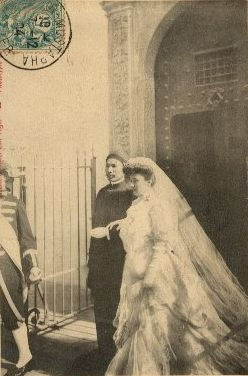

Vào một buổi chiều, tàu Biên Hòa ( chở vua Hàm Nghi -TTB) cập bến, chờ làm thủ tục, tôi theo cha ra đón ông Hoàng nhỏ bé ấy. Không hiểu sao tôi cảm thấy một nổi buồn man mác động lòng trắc ẩn. Dưới bóng chiều chập chờn, con tàu nhả khói phì phì dường như muốn trút vơi nỗi nhọc nhằn trong cuộc hành trình. Một bóng đen nho nhỏ tựa vào lan can, đăm đăm nhìn ra phía chân trời. Người nghĩ gì? Điều chắc chắn là nổi căm hờn người Pháp chúng tôi đang hừng hực dâng lên như những lớp sóng vô tận đuổi nhau ra khơi chẳng hay có về đến Tổ Quốc thiêng liêng của Người không?
Nỗi bất bình chiếm lĩnh trí óc tôi. Lòng thương vô hạn con người nhỏ bé ấy sớm bị nanh vuốt cú diều cuỗm đi xa tổ ấm, xa bầu đàn, xa những người thân càng làm tôi băn khoăn, thao thức:
- " Ta phải sửa chữa lỗi lầm này! ". Cha tôi chế nhạo tôi đến phát khóc, nhưng cũng khen tôi có trái tim vàng.
Tôi yêu cầu cha tôi đề đạt với phủ Toàn Quyền cho tôi được trông nom, săn sóc Người và đã được chấp thuận. Tôi từ bỏ ý định tiếp tục khoa luật: quanh quẩn bên con chim nhỏ bé của tôi. Buồn thay! Con chim ấy quên tiếng hót, âm thầm như cá chép ( muet come une carpe - ngạn ngữ Pháp ), không nói năng, đòi hỏi gì. Tình trạng ấy kéo dài mấy tháng, tôi xoay xở đủ cách cũng vô hiệu.
Một buổi nào đó, trăng luồn song cửa. Ôi! Trăng kia mơ màng, ảm đạm làm sao. Tôi ngồi trước dương cầm. Xin giới thiệu, tôi là một nhạc công tồi, nhưng lúc ấy tôi cảm thấy cây đàn run run lên, dìu dặt, ai oán. Nỗi buồn lướt trên phím như tiếng nức nở của con tim, khi vút lên căm hờn sôi sục. Tôi không nhớ đã chơi bản nhạc nào, điều đó không quan trọng. Đây là khúc nhạc lòng tôi, tấm lòng vị tha đầy nỗi bất bình và thương cảm.
Tiếng đàn dứt, tôi ngoảnh lại thấy Người đứng sau tôi, cặp mắt long lanh. Tôi hỏi:
- Hoàng tử có ưa không?
Người gật đầu.
- Có thích học đàn không?
Người lại gật đầu. Tôi sung sướng, hôn người từ đó con cá chép của tôi mở miệng. Có lẽ đó là hạnh phúc lớn nhất của đời tôi...
Vì sao Người từ bỏ ngai vàng? Nếu Người y thuận theo trở lại ngôi báu thì người Pháp chúng tôi vui mừng biết chừng nào. Vì Người được toàn dân sùng bái, toàn thể sĩ phu tôn thờ. Tôi hiểu rằng lòng yêu Tổ Quốc, yêu quê hương, yêu gia đình, yêu đồng loại cao hơn chiếc ngai vàng nhỏ bé. Tôi yêu nước Pháp Tổ Quốc tôi, nên rất trọng những người yêu mến Tổ Quốc họ ".
( Theo Những ngày cuối cùng của vua Hàm Nghi- Nguyễn Hải Âu).

(Đám cưới vua hàm Nghi ở Algérie năm 1904 )